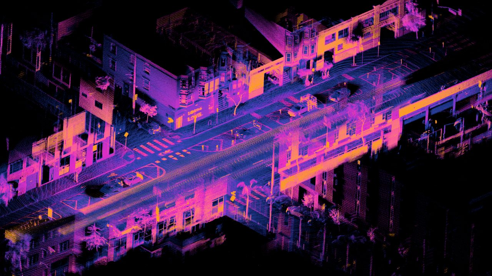
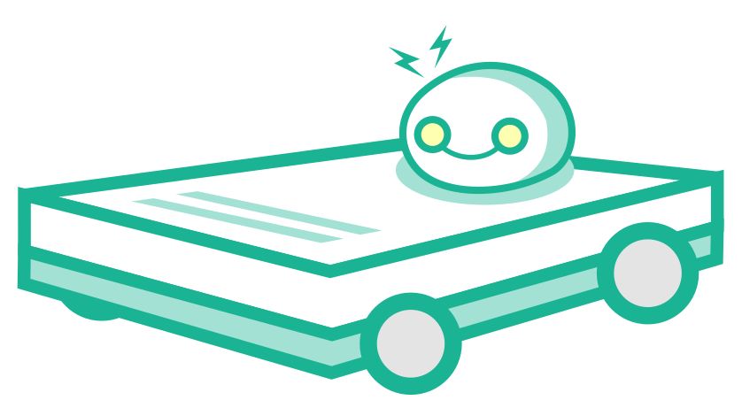
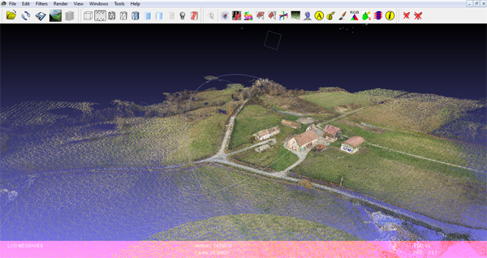
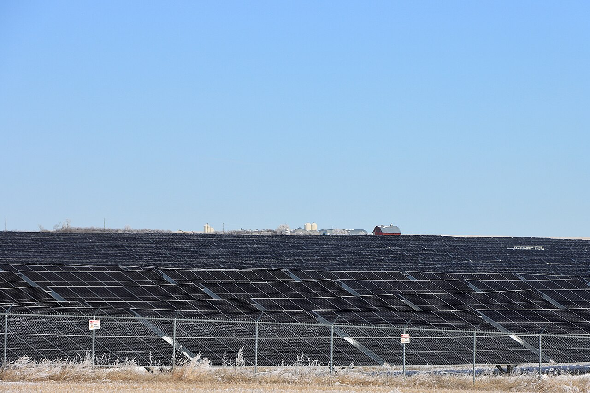

Perception, navigation, 3D vision, LLM systems and renewable energy.

MSc thesis · 2025–26
Real-Time 3D Perception for Autonomous Ground Vehicles
Training-free pipeline: YOLOv8m-seg → calibrated LiDAR projection → adaptive mask erosion → DBSCAN clustering → PCA 3D oriented boxes on KITTI scenes. Thesis code release in preparation.
50.51%Car IoU
38.63%Pedestrian IoU
~11 FPSruntime
1,874 MiBGPU memory
PythonPyTorchOpen3DYOLOv8
Related YOLO benchmark ↗

Navigation · 2025
TriLayer-Nav
A* global planning, DWA local avoidance and MPC control for UGV navigation in MuJoCo. Published in Gyroscopy and Navigation (2026).
+27.46%position accuracy
−52.90%velocity mean error
MuJoCoA*DWAMPC
View repository ↗
Motion planning · ROS 2 · 2026
AMR Obstacle Avoidance in ROS 2
Every algorithm hand-written: A* global planner, DWA with moving-obstacle prediction, pure pursuit with S-curve profile, and a custom 2D warehouse simulator. No Nav2, no Gazebo.
19.4 sfinal run
0replans / overlaps
ROS 2PythonA*DWA
View repository ↗

3D vision · 2025
Depth-Supervised NeRF
Hard geometric constraints vs. soft depth loss vs. hybrid depth integration for more stable 3D scene reconstruction. Manuscript under review.
NeRFPyTorch3D vision
View repository ↗
Perception benchmark · 2025
YOLO Benchmark for Autonomous Navigation
YOLOv8, YOLO11 and YOLO12 on a 954-image KITTI subset (763 train / 191 val). Pedestrian is the weakest class.
75.6 / 74.8 / 73.2mAP@0.5 (v8/v11/v12)
42–45 FPSRTX 4050
PyTorchYOLOv8YOLO11YOLO12
View repository ↗
LLM evaluation · 2025
Citation Reliability in Small LLMs
Do small language models cite real sources? 850 references across 45 topics, Wilson confidence intervals and topic-level Mann-Whitney tests.
0.39 → 0.00REAL_OK, famous → recent
PythonLLM evaluationStatistics
View repository ↗
LLM systems · 2026
Applied LLM Systems
Structured extraction, RAG over PDFs with FAISS, a tool-using agent and a Streamlit chat app, behind a multi-provider fallback chain.
LangChainFAISSStreamlitGemini
View repository ↗

Power systems · 2023
Hybrid PV System Design
Simulink/MATLAB study of Constant Power Load instability with a single-phase hybrid inverter, PLL and MPPT.
MATLABSimulinkMPPT
Project details ↗